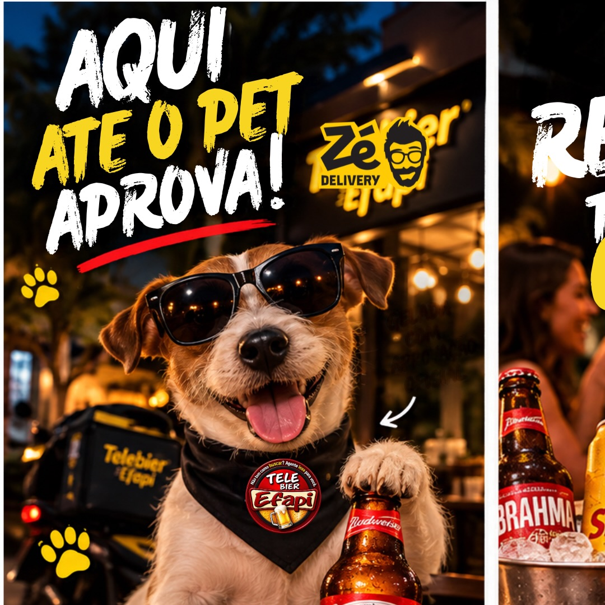

CRIAÇÃO ASSISTIDA POR IAMarca: Telebier Efapi
Publicação: @telebierconcordia
Téo entra na conversa
- Objetivo da peça
- Aproximar a marca do público com um personagem e uma linguagem bem-humorada.
- Criação
- Direção criativa e criação assistida por IA, com personagem, composição e texto para redes sociais.
- Entrega
- Peça publicada em 25/09/2026, com a identidade Telebier Efapi, no perfil @telebierconcordia.